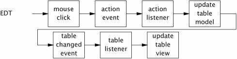

{% include JB/setup %}
{% raw %}
<div>


<a name="ch09lev1sec2" class="calibre18" id="ch09lev1sec2"></a>
<h3 id="631532-891" class="docSection1Title">9.2. Short-running GUI Tasks</h3>
<p class="docText1">In a GUI application, events originate in the event thread and bubble up to application-provided listeners, which will probably perform some computation that affects the presentation objects. For simple, short-running tasks, the entire action can stay in the event thread; for longer-running tasks, some of the processing should be offloaded to another thread.</p>
<p class="docText1">In the simple case, confining presentation objects to the event thread is completely natural. <a class="calibre2" href="#ch09list03">Listing 9.3</a> creates a button whose color changes randomly when pressed. When the user clicks on the button, the toolkit delivers an <tt class="calibre25">ActionEvent</tt> in the event thread to all registered action listeners. In response, the action listener picks a new color and changes the button's background color. So the event originates in the GUI toolkit and is delivered to the application, and the application modifies the GUI in response to the user's action. Control never has to leave the event thread, as illustrated in <a class="calibre2" href="#ch09fig01">Figure 9.1</a>.</p>
<a name="ch09fig01" class="calibre18" id="ch09fig01"></a><p class="calibre21"><div class="calibre12">
<h5 class="docExampleTitle">Figure 9.1. Control Flow of a Simple Button Click.</h5>
</div></p><p class="docText1">
</p>
<p class="calibre1"> </p>
<p class="docText1">This trivial example characterizes the majority of interactions between GUI applications and GUI toolkits. So long as tasks are short-lived and access only GUI objects (or other thread-confined or thread-safe application objects), you can almost totally ignore threading concerns and do everything from the event thread, and the right thing happens.</p>
<p class="docText1"></p><a name="ch09list01" class="calibre18" id="ch09list01"></a><h5 id="title-IDAPDBEN" class="docExampleTitle">Listing 9.1. Implementing <tt class="calibre33">SwingUtilities</tt> Using an <tt class="calibre33">Executor</tt>.</h5><p class="calibre21"><table cellspacing="0" width="90%" border="1" cellpadding="5" class="calibre5"><tr class="calibre6"><td class="calibre28">
<pre class="calibre30">public class SwingUtilities {
    private static final ExecutorService exec =
        Executors.newSingleThreadExecutor(new SwingThreadFactory());
    private static volatile Thread swingThread;

    private static class SwingThreadFactory implements ThreadFactory {
        public Thread newThread(Runnable r) {
            swingThread = new Thread(r);
            return swingThread;
        }
    }

    public static boolean isEventDispatchThread() {
        return Thread.currentThread() == swingThread;
    }

    public static void invokeLater(Runnable task) {
        exec.execute(task);
    }

    public static void invokeAndWait(Runnable task)
            throws InterruptedException, InvocationTargetException {
        Future f = exec.submit(task);
        try {
            f.get();
        } catch (ExecutionException e) {
            throw new InvocationTargetException(e);
        }
    }
}
</pre><br class="calibre11"/>
</td></tr></table></p>
<p class="docText1"></p><a name="ch09list02" class="calibre18" id="ch09list02"></a><h5 id="title-IDAGEBEN" class="docExampleTitle">Listing 9.2. <tt class="calibre33">Executor</tt> Built Atop <tt class="calibre33">SwingUtilities</tt>.</h5><p class="calibre21"><table cellspacing="0" width="90%" border="1" cellpadding="5" class="calibre5"><tr class="calibre6"><td class="calibre28">
<pre class="calibre30">public class GuiExecutor extends AbstractExecutorService {
    <span class="docEmphasis">// Singletons have a private constructor and a public factory</span>
    private static final GuiExecutor instance = new GuiExecutor();

    private GuiExecutor() { }

    public static GuiExecutor instance() { return instance; }

    public void execute(Runnable r) {
        if (SwingUtilities.isEventDispatchThread())
            r.run();
        else
            SwingUtilities.invokeLater(r);
    }

    <span class="docEmphasis">// Plus trivial implementations of lifecycle methods</span>
}
</pre><br class="calibre11"/>
</td></tr></table></p>
<a name="ch09list03" class="calibre18" id="ch09list03"></a><h5 id="title-IDA4EBEN" class="docExampleTitle">Listing 9.3. Simple Event Listener.</h5><p class="calibre21"><table cellspacing="0" width="90%" border="1" cellpadding="5" class="calibre5"><tr class="calibre6"><td class="calibre28">
<pre class="calibre30">final Random random = new Random();
final JButton button = new JButton("Change Color");
...
button.addActionListener(new ActionListener() {
    public void actionPerformed(ActionEvent e) {
        button.setBackground(new Color(random.nextInt()));
    }
});
</pre><br class="calibre11"/>
</td></tr></table></p>
<p class="docText1">A slightly more complicated version of this same scenario, illustrated in <a class="calibre2" href="#ch09fig02">Figure 9.2</a>, involves the use of a formal data model such as a <tt class="calibre25">TableModel</tt> or <tt class="calibre25">treeModel</tt>. Swing splits most visual components into two objects, a model and a view. The data to be displayed resides in the model and the rules governing how it is displayed reside in the view. The model objects can fire events indicating that the model data has changed, and views subscribe to these events. When the view receives an event indicating the model data may have changed, it queries the model for the new data and updates the display. So in a button listener that <a name="iddle1628" class="calibre18" id="iddle1628"></a><a name="iddle2063" class="calibre18" id="iddle2063"></a><a name="iddle2064" class="calibre18" id="iddle2064"></a><a name="iddle2120" class="calibre18" id="iddle2120"></a><a name="iddle2262" class="calibre18" id="iddle2262"></a><a name="iddle3000" class="calibre18" id="iddle3000"></a><a name="iddle1026" class="calibre18" id="iddle1026"></a><a name="iddle1027" class="calibre18" id="iddle1027"></a><a name="iddle1041" class="calibre18" id="iddle1041"></a><a name="iddle1626" class="calibre18" id="iddle1626"></a><a name="iddle1627" class="calibre18" id="iddle1627"></a><a name="iddle2065" class="calibre18" id="iddle2065"></a><a name="iddle2258" class="calibre18" id="iddle2258"></a><a name="iddle2366" class="calibre18" id="iddle2366"></a><a name="iddle2367" class="calibre18" id="iddle2367"></a><a name="iddle2490" class="calibre18" id="iddle2490"></a><a name="iddle2997" class="calibre18" id="iddle2997"></a><a name="iddle3220" class="calibre18" id="iddle3220"></a><a name="iddle3221" class="calibre18" id="iddle3221"></a><a name="iddle3904" class="calibre18" id="iddle3904"></a><a name="iddle3905" class="calibre18" id="iddle3905"></a><a name="iddle4339" class="calibre18" id="iddle4339"></a><a name="iddle4340" class="calibre18" id="iddle4340"></a><a name="iddle4625" class="calibre18" id="iddle4625"></a><a name="iddle4626" class="calibre18" id="iddle4626"></a><a name="iddle4909" class="calibre18" id="iddle4909"></a><a name="iddle5084" class="calibre18" id="iddle5084"></a><a name="iddle5085" class="calibre18" id="iddle5085"></a><a name="iddle5086" class="calibre18" id="iddle5086"></a>modifies the contents of a table, the action listener would update the model and call one of the <tt class="calibre25">fireXxx</tt> methods, which would in turn invoke the view's table model listeners, which would update the view. Again, control never leaves the event thread. (The Swing data model <tt class="calibre25">fireXxx</tt> methods always call the model listeners directly rather than submitting a new event to the event queue, so the <tt class="calibre25">fireXxx</tt> methods must be called only from the event thread.)</p>
<a name="ch09fig02" class="calibre18" id="ch09fig02"></a><p class="calibre21"><div class="calibre12">
<h5 class="docExampleTitle">Figure 9.2. Control Flow with Separate Model and View Objects.</h5>
</div></p><p class="docText1">
</p>
<p class="calibre1"> </p>

<p class="calibre1"> </p>

</div>

{% endraw %}

